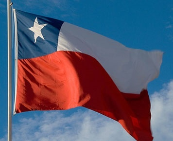

.png)
.png)
.png)
.png)
.png)
.png)


Kerjasama dari Indonesia dan Chile adalah contoh dari kerjasama bilateral. Kerja sama tersebut juga mencerminkan upaya strategis kedua negara
untuk meningkatkan daya saing di pasar regional dan global, memperluas akses pasar,
serta mendorong pertumbuhan ekonomi yang berkelanjutan. Dengan mengedepankan prinsip saling
menguntungkan, Chile dan Indonesia tidak hanya memperkuat hubungan ekonomi tetapi juga mempererat
hubungan politik, sosial, dan budaya.
Kerja sama Indonesia-Chile juga mencerminkan beberapa tujuan dari SDGs 8, terkait perkembangan ekonomi
dan pekerjaan yang layak. Hal ini membantu banyak orang dari kedua negara meningkatkan kesejahteraan
hidup mereka dan membantu orang-orang mendapatkan pekerjaan dengan upah dan kondisi yang layak. Kerja
sama bilateral ini telah mencapai banyak tujuan dari SDGs 8 dengan sukses, dan ada banyak hal yang dapat
kita pelajari dari hubungan internasional kedua negara tersebut.
Nilai-nilai pancasila juga diterapkan dalam pelaksanaan kerja sama bilateral ini. Seperti sila ke-2
yang fokus dalam penerapan keadilan dan kemanusiaan, yang merupakan 2 hal yang sangat penting saat kita
mempraktekan hubungan internasional antara 2 negara yang berbeda dalam banyak hal. Penerapan pancasila sangat
penting bagi kita agar kita bisa menjaga identitas dan jati diri bangsa, sekaligus menjadi landasan
moral kita dalam segala hal, salah satunya adalah bekerja sama dengan negara lain.